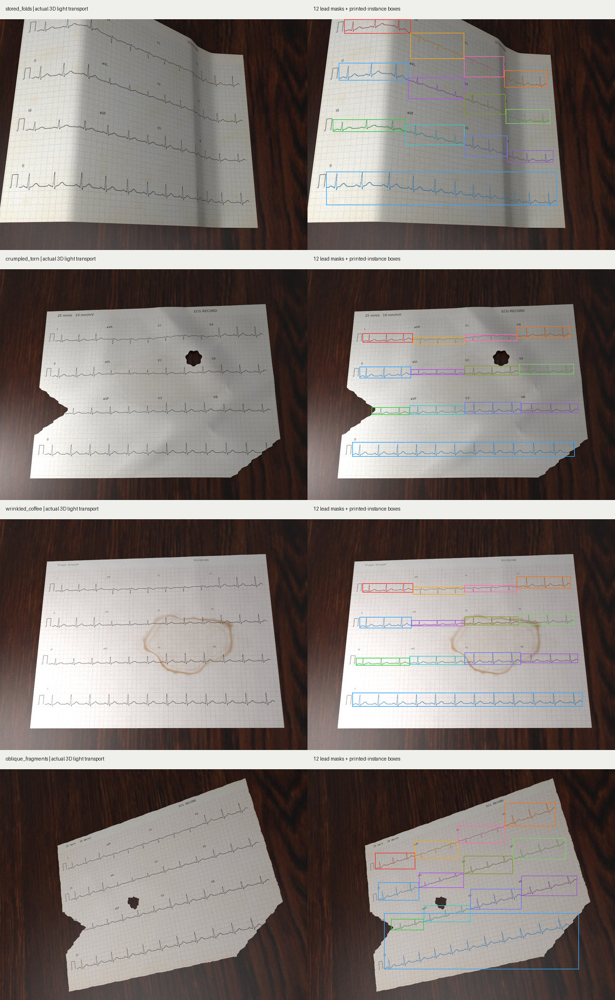
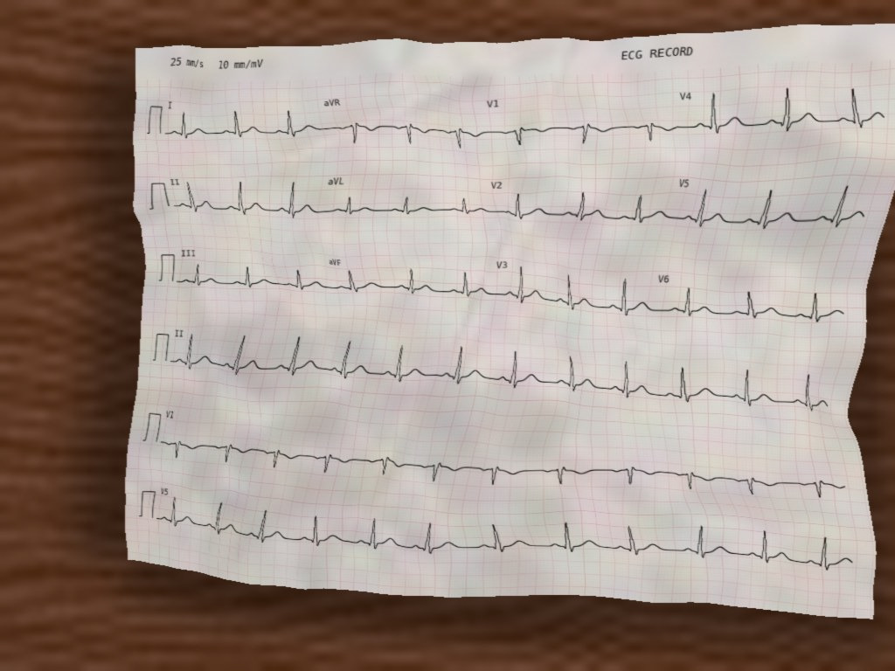
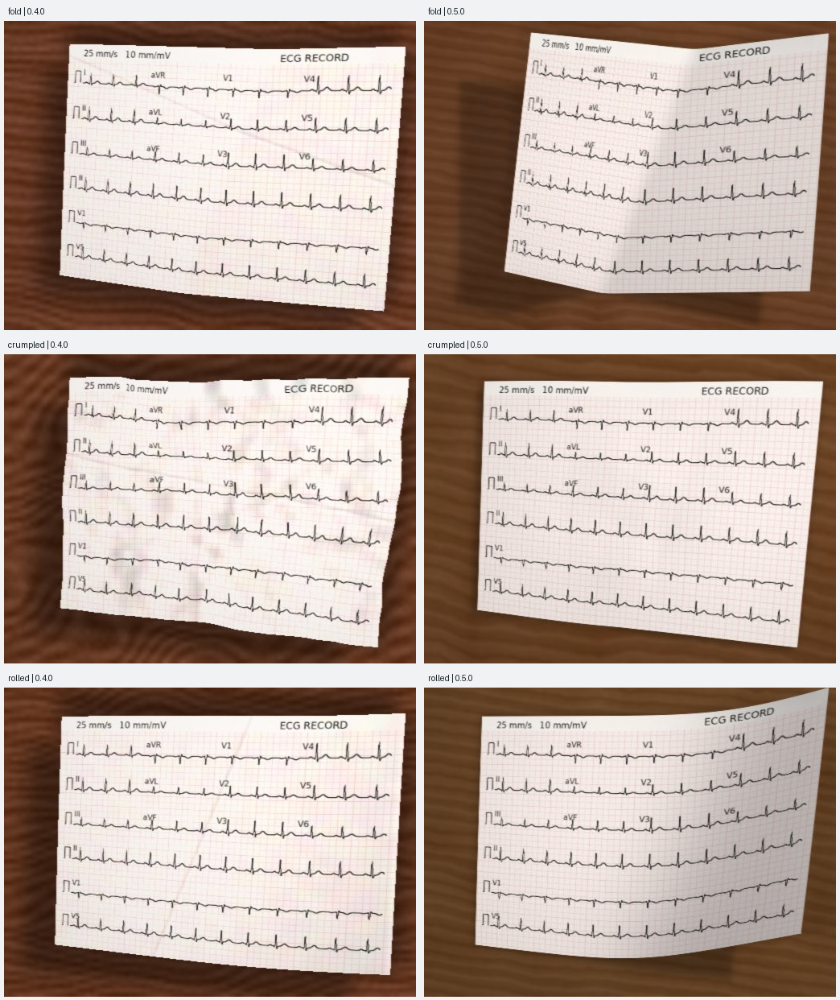
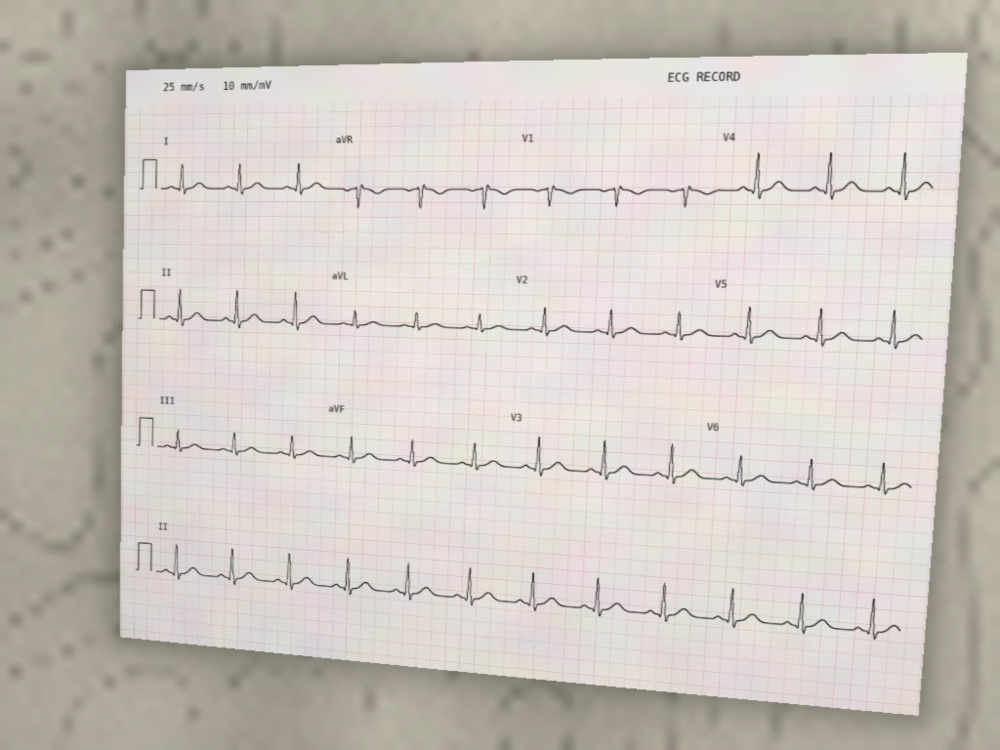
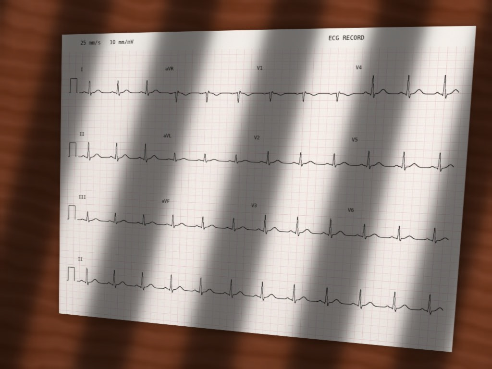

Paper, tables & lighting
Irregular paper in 0.8.0#
The torch surface uses finite asymmetric creases branching from displaced junctions, unequal accordion panels and oriented fine wrinkles. Relief and normals drive lighting and projection together. A large ambient contribution can hide real relief. Raking illumination reveals it without painting fake creases onto a flat page. This remains a conservative 2.5D approximation.
The optional Mitsuba backend adds multifold, wrinkled and crumpled
surfaces, metric-space geometry seeds, actual removed substrate and camera
orientation through camera_up. Primary-ray targets share the same physical
mesh as image and shadow rendering. Paper support can come from rectified
RenderBatch.targets["paper_support"]. Run
python examples/pathtraced_capture.py --adverse --out build/physical --spp 192
for complete examples. The geometry is prescribed and relaxed, not a full
plastic thin-shell solver with self-contact.

The procedural scene keeps geometry, normals, illumination and visibility together. A paper deformation changes both the photographed trace and its target mask.
Eight paper surfaces#
flat, curl, fold, accordion, crumpled, wrinkled, rolled and corner use a material-coordinate 2.5D model. Curl, fold, accordion, rolled edges and lifted corners integrate unit tangents along a bend. The sheet shortens in projection while its printed material keeps its length. Crumples use finite signed creases and a bounded in-plane shortening approximation. Select one surface or let surface_mode='mixed' sample the family.
render = ECGImageLayer(parameters={
"surface_mode": Choice(["flat", "fold", "crumpled"]),
"surface_strength": Uniform(.2, .8),
"relief_view": [.4, -.3],
})


Browse the paper gallery for the full set of surfaces and palettes. These are procedural approximations. They do not solve cloth dynamics or arbitrary sheet self-overlap.
Material geometry in 0.5.0#

The comparison keeps source waveform, layout, camera and three-light controls fixed. Default surface detail and tabletop algorithms intentionally differ. Comparison provenance.
The previous default combined arbitrary image-plane sine warps, a relief surface and an independently painted crease stripe. Version 0.5.0 generates the large shape from the material mesh. Illumination follows its normals and height. Legacy curl_x, curl_y and crease_warp remain explicit overrides and default to zero.
For bend angle theta(s), the cross-section integrates dX/ds = cos(theta) and dZ/ds = sin(theta). The squared tangent length is therefore one before discretization. Sharp-fold integration, sampled derivatives and localized crumples have measurable approximation error.
| Parameter | Meaning |
|---|---|
surface_strength |
Overall bend strength, 0..1 |
surface_axis |
Main bend orientation in radians |
fold_width |
Rounded crease width, in half-page-width units |
fold_span |
Width of the neighboring crease facet |
fold_length |
Finite crease length |
fold_amplitude |
Crease relief in half-page-width units |
fold_sign |
Positive or negative crease direction |
crease_count |
Number of active local creases, 0..8 |
paper_gap |
Sheet/table clearance, in half-page-width units |
fold_* values have eight entries per sample. The first position and width also control the single-fold family. Corner bends use a diagonal hinge and preserve material length like the cylindrical families. Creases approximate worn paper with angular facets and rounded ridges, rather than soft Gaussian bumps.
Faster inverse mapping#
The default geometry_solver="coarse_to_fine" solves on the small material grid and performs two output-resolution Newton refinements. geometry_solver="dense" retains the output-resolution solver as a numerical reference. Both reject nonpositive/near-singular projections and excessive residuals. Pixel-center coordinates match grid_sample(align_corners=False).
render = ECGImageLayer(
config=RenderConfig(geometry_solver="coarse_to_fine"),
compile_raster=True,
compile_scene=True,
)
compile_scene=True fuses deterministic material geometry, lighting and Newton arithmetic. Random draws and the caller's generator stream stay outside compiled regions. It is opt-in and its first call compiles. Performance separates cold and warm calls.
Tables and paper colors#
Built-in table families are wood, marble, laminate, fabric, metal, clinical, plain and leather. Paper has eight palettes. Grid ink has five independent palettes.
render = ECGImageLayer(parameters={
"background_type": Choice(["wood", "marble", "clinical"]),
"paper_palette": Choice([0, 1, 2, 4]),
"palette": 0, # red grid
})

Lighting and shadows#
Three colored lights, energy-normalized matte diffuse shading, a bounded roughness-dependent specular term, flash and approximate ambient occlusion affect the paper. Height-field shadow rays process all three lights together in bounded chunks. Nonintersecting rays leave flat paper unshadowed, including at grazing angles. Cast shadows use local paper height and sampled light directions, with controlled softness. A narrow contact shadow joins the sheet to the table. Sheet edges use fractional coverage for smoother silhouettes.
Foreground shadow families are none, edge, phone, hand, blinds, window and ellipse. They are analytic silhouettes. They do not contain full 3D hand or phone geometry.

render = ECGImageLayer(parameters={
"object_shadow": "blinds",
"object_shadow_strength": .5,
"ambient_light": .65,
})
Inspect the scene#
batch = render.render_batch(signals, stage="all", return_scene=True,
return_field=True, return_canonical=True)
normals = batch.scene["normals"]
height = batch.scene["height"]
metric_error = batch.scene["metric_strain"]
residual = batch.scene["projection_residual"]
visibility = batch.targets["valid"]
Scene maps are opt-in inspection outputs. Avoid retaining them when a training step only needs RGB or trace masks. External document assets can supply pre-rendered 3D visibility maps for shapes outside the procedural model.
Numerical paper audit#
python documentation/paper_audit.py --device cpu --out paper-audit.json
The recorded audit checks all eight families against a 12-iteration dense solve on visible interior pixels. It records material metric error and inverse-field error in pixels. External-bank entries report zero procedural metric error because their geometry is supplied, not checked by this model. These diagnostics establish numerical behavior, not agreement with photographed paper.